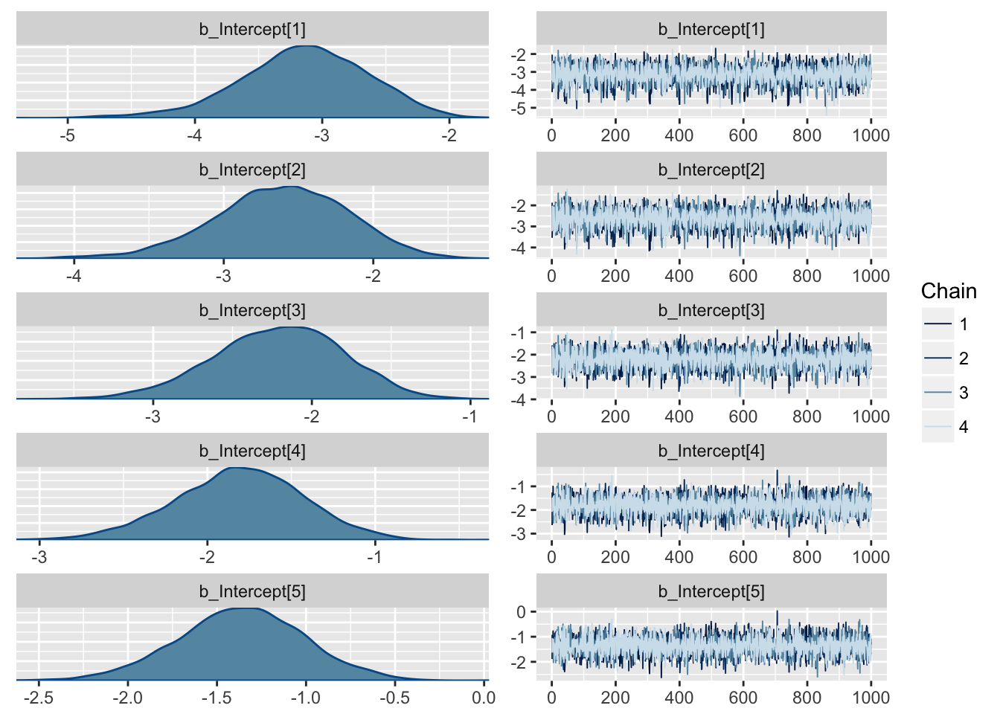
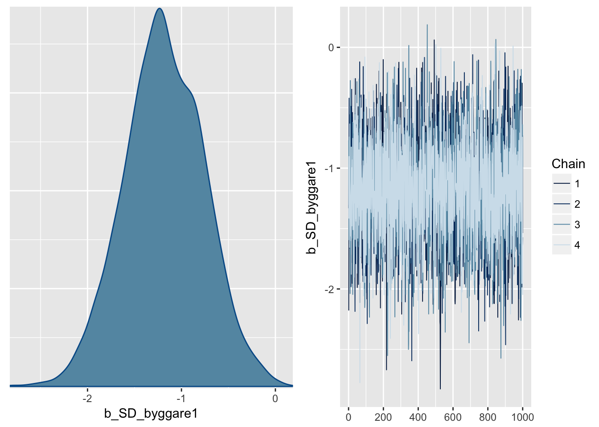
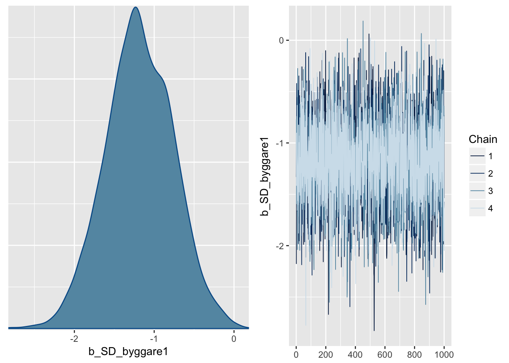
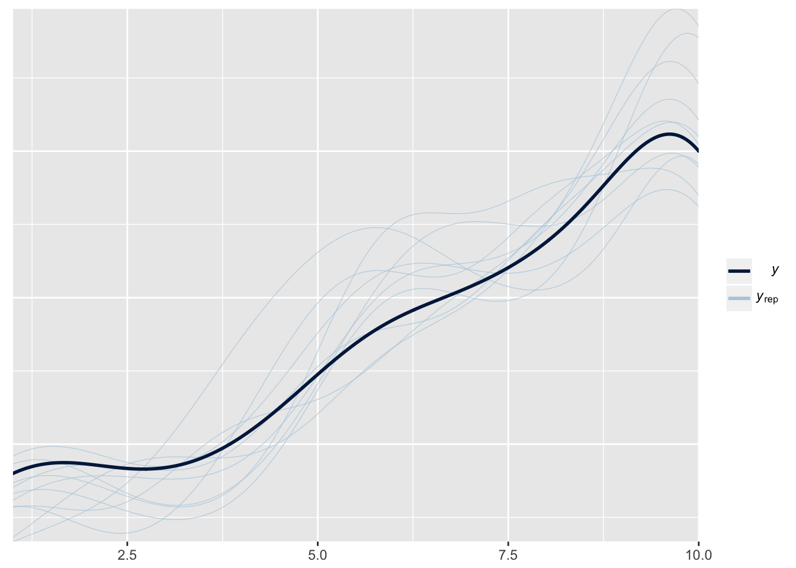
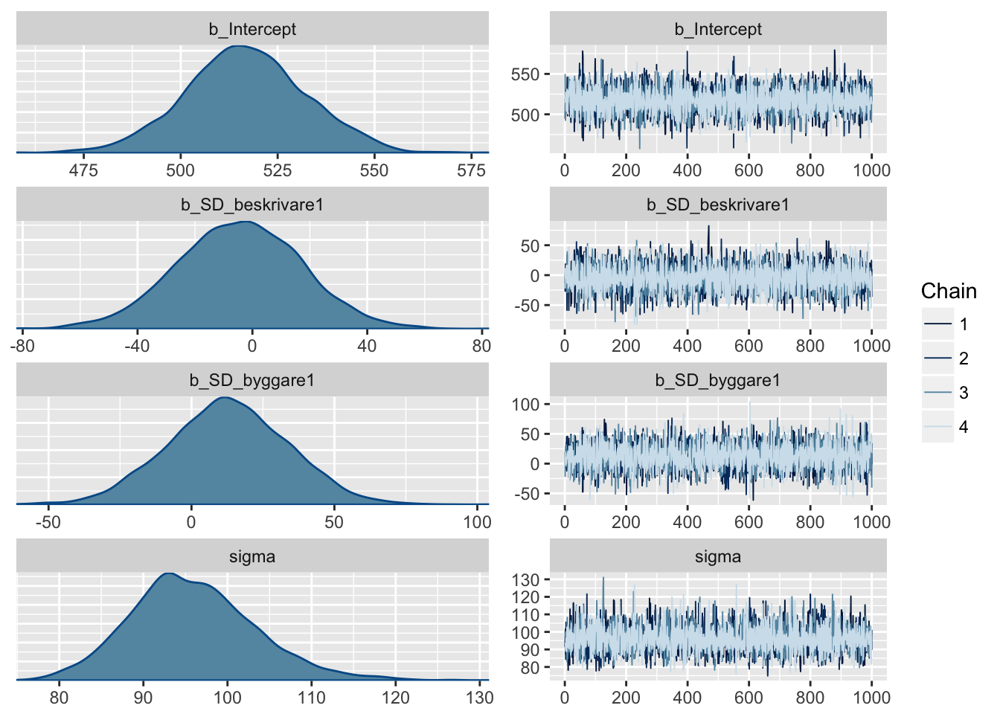
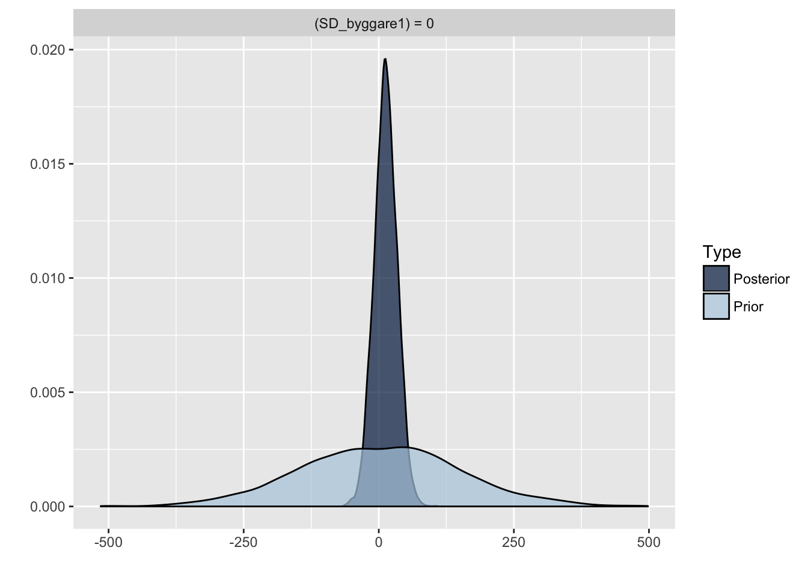

Model Building (Lego)
Benjamin Holding
Descriptive statistics
#Means (Score, Time & Efficiency) for pairs where both are in the control condition
legoData_final[which(legoData_final$SD_beskrivare == 0 & legoData_final$SD_byggare == 0),] %>%
summarise(Score_mean=mean(Correct,na.rm=T),Time_mean=mean(TimeSec,na.rm=T),efficiency_mean=mean(efficiency_scaled,na.rm=T))## Score_mean Time_mean efficiency_mean
## 1 6.5 519.6333 0.1207779#Standard deviation (Score, Time & Efficiency) for pairs where both are in the control condition
legoData_final[which(legoData_final$SD_beskrivare == 0 & legoData_final$SD_byggare == 0),] %>%
summarise(Score_sd=sd(Correct,na.rm=T),Time_sd=sd(TimeSec,na.rm=T),efficiency_sd=sd(efficiency_scaled,na.rm=T))## Score_sd Time_sd efficiency_sd
## 1 2.751175 90.09171 0.9243288#Means (Score, Time & Efficiency) for pairs where one of the participants are sleep deprived
legoData_final[which(legoData_final$SD_beskrivare != legoData_final$SD_byggare),] %>%
summarise(Score_mean=mean(Correct,na.rm=T),Time_mean=mean(TimeSec,na.rm=T),efficiency_mean=mean(efficiency_scaled,na.rm=T))## Score_mean Time_mean efficiency_mean
## 1 5.709677 515.0645 -0.06371829#Standard deviation (Score, Time & Efficiency) for pairs where one of the participants are sleep deprived
legoData_final[which(legoData_final$SD_beskrivare != legoData_final$SD_byggare),] %>%
summarise(Score_sd=sd(Correct,na.rm=T),Time_sd=sd(TimeSec,na.rm=T),efficiency_sd=sd(efficiency_scaled,na.rm=T))## Score_sd Time_sd efficiency_sd
## 1 3.328599 103.95 1.140321#Means (Score, Time & Efficiency) for pairs where both partiicpants are sleep deprived
legoData_final[which(legoData_final$SD_beskrivare == 1 & legoData_final$SD_byggare == 1),] %>%
summarise(Score_mean=mean(Correct,na.rm=T),Time_mean=mean(TimeSec,na.rm=T),efficiency_mean=mean(efficiency_scaled,na.rm=T))## Score_mean Time_mean efficiency_mean
## 1 6.148148 528.037 0.002686968#Standard deviation (Score, Time & Efficiency) for pairs where both partiicpants are sleep deprived
legoData_final[which(legoData_final$SD_beskrivare == 1 & legoData_final$SD_byggare == 1),] %>%
summarise(Score_sd=sd(Correct,na.rm=T),Time_sd=sd(TimeSec,na.rm=T),efficiency_sd=sd(efficiency_scaled,na.rm=T))## Score_sd Time_sd efficiency_sd
## 1 2.684768 90.11167 0.9508417Inferential statistics
Model building task
SCORE
#set the priors
priors_score = c(set_prior("normal(0,2.25)", class = "b", lb = -9, ub = 9))
#Bayesian linear models (adding 1 coefficient at a time)
brms.intercept.model <- brm(Correct ~ 1, legoData_final,sample_prior = T, cores = 4)## Compiling the C++ model## Start samplingbrms.Beskrivare.model <- brm(Correct ~ SD_beskrivare, legoData_final,prior=priors_score, sample_prior = T, cores = 4)## Compiling the C++ model
## Start samplingbrms.Byggare.model <- brm(Correct ~ SD_byggare, legoData_final,prior=priors_score, sample_prior = T, cores = 4)## Compiling the C++ model
## Start samplingbrms.BB.model <- brm(Correct ~ SD_beskrivare+SD_byggare, legoData_final,prior=priors_score, sample_prior = T, cores = 4)## Compiling the C++ model
## Start samplingbrms.interaction.model <- brm(Correct ~ SD_beskrivare*SD_byggare, legoData_final,prior=priors_score, sample_prior = T, cores = 4)## Compiling the C++ model
## Start sampling#model comparison
model1.waic <- WAIC(brms.intercept.model)
model2.waic <- WAIC(brms.Beskrivare.model)
model3.waic <- WAIC(brms.BB.model)
model4.waic <- WAIC(brms.interaction.model)
modelbyggare.waic <- WAIC(brms.Byggare.model)
compare_ic(model1.waic,model2.waic,modelbyggare.waic,model3.waic,model4.waic)## WAIC SE
## brms.intercept.model 441.91 11.19
## brms.Beskrivare.model 442.29 11.40
## brms.Byggare.model 439.53 12.00
## brms.BB.model 437.87 13.00
## brms.interaction.model 438.31 12.67
## brms.intercept.model - brms.Beskrivare.model -0.38 2.40
## brms.intercept.model - brms.Byggare.model 2.38 3.93
## brms.intercept.model - brms.BB.model 4.04 5.94
## brms.intercept.model - brms.interaction.model 3.60 6.06
## brms.Beskrivare.model - brms.Byggare.model 2.76 4.85
## brms.Beskrivare.model - brms.BB.model 4.42 5.10
## brms.Beskrivare.model - brms.interaction.model 3.98 5.20
## brms.Byggare.model - brms.BB.model 1.66 3.93
## brms.Byggare.model - brms.interaction.model 1.22 4.19
## brms.BB.model - brms.interaction.model -0.44 1.41model1.loo <- LOO(brms.intercept.model)
model2.loo <- LOO(brms.Beskrivare.model)
model3.loo <- LOO(brms.BB.model) #best fitting model
model4.loo <- LOO(brms.interaction.model)
modelbyggare.loo <- LOO(brms.Byggare.model)
compare_ic(model1.loo,model2.loo,modelbyggare.loo,model3.loo,model4.loo)## LOOIC SE
## brms.intercept.model 441.91 11.19
## brms.Beskrivare.model 442.30 11.40
## brms.Byggare.model 439.54 12.00
## brms.BB.model 437.89 13.01
## brms.interaction.model 438.35 12.68
## brms.intercept.model - brms.Beskrivare.model -0.39 2.40
## brms.intercept.model - brms.Byggare.model 2.37 3.93
## brms.intercept.model - brms.BB.model 4.02 5.94
## brms.intercept.model - brms.interaction.model 3.56 6.06
## brms.Beskrivare.model - brms.Byggare.model 2.76 4.85
## brms.Beskrivare.model - brms.BB.model 4.41 5.10
## brms.Beskrivare.model - brms.interaction.model 3.95 5.20
## brms.Byggare.model - brms.BB.model 1.65 3.93
## brms.Byggare.model - brms.interaction.model 1.19 4.19
## brms.BB.model - brms.interaction.model -0.46 1.40#model checking
plot(brms.BB.model) #seems finepp_check(brms.BB.model) #model isn't taking account of the skewness in the data## Using 10 posterior samples for ppc type 'dens_overlay' by default.
#score distribution comparisons
legoData_final.correctPlus1 <- legoData_final
legoData_final.correctPlus1$Correct <- legoData_final.correctPlus1$Correct+1 #changing so that score has no zero value
gaussian.model <- brm(Correct ~ SD_beskrivare+SD_byggare, legoData_final.correctPlus1,prior=priors_score, sample_prior = T, cores = 4,family = gaussian)## Compiling the C++ model
## Start samplingexgaussian.model <- brms.BB.model <- brm(Correct ~ SD_beskrivare+SD_byggare, legoData_final.correctPlus1,prior=priors_score, sample_prior = T, cores = 4,family = exgaussian)## Compiling the C++ model
## Start sampling## Warning: There were 499 divergent transitions after warmup. Increasing adapt_delta above 0.8 may help. See
## http://mc-stan.org/misc/warnings.html#divergent-transitions-after-warmup## Warning: Examine the pairs() plot to diagnose sampling problemsstudent.model <- brms.BB.model <- brm(Correct ~ SD_beskrivare+SD_byggare, legoData_final.correctPlus1,prior=priors_score, sample_prior = T, cores = 4,family = student)## Compiling the C++ model
## Start samplinghurdle_lognormal.model <- brm(Correct ~ SD_beskrivare+SD_byggare, legoData_final.correctPlus1,prior=priors_score, sample_prior = T, cores = 4,family = hurdle_lognormal)## Compiling the C++ model
## Start samplingcumulative.model <- brm(Correct ~ SD_beskrivare+SD_byggare, legoData_final.correctPlus1,prior=priors_score, sample_prior = T, cores = 4,family = cumulative)## Compiling the C++ model
## Start samplinggaussian.model.waic <- WAIC(gaussian.model)
exgaussian.model.waic <- WAIC(exgaussian.model)
student.model.waic <- WAIC(student.model)
hurdle_lognormal.waic <- WAIC(hurdle_lognormal.model)
cumulative.model.waic <- WAIC(cumulative.model) #best fitting distribution
compare_ic(gaussian.model.waic, exgaussian.model.waic, student.model.waic,hurdle_lognormal.waic, cumulative.model.waic)## WAIC SE
## gaussian.model 437.89 12.95
## exgaussian.model 438.74 12.87
## student.model 438.51 13.37
## hurdle_lognormal.model 501.34 12.84
## cumulative.model 365.54 17.06
## gaussian.model - exgaussian.model -0.85 0.15
## gaussian.model - student.model -0.63 1.00
## gaussian.model - hurdle_lognormal.model -63.46 8.34
## gaussian.model - cumulative.model 72.35 16.14
## exgaussian.model - student.model 0.22 1.12
## exgaussian.model - hurdle_lognormal.model -62.61 8.25
## exgaussian.model - cumulative.model 73.20 16.11
## student.model - hurdle_lognormal.model -62.83 9.25
## student.model - cumulative.model 72.98 15.85
## hurdle_lognormal.model - cumulative.model 135.81 21.25gaussian.model.loo <- LOO(gaussian.model)
exgaussian.model.loo <- LOO(exgaussian.model)
student.model.loo <- LOO(student.model)
hurdle_lognormal.loo <- LOO(hurdle_lognormal.model)
cumulative.model.loo <- LOO(cumulative.model) #best fitting distribution
compare_ic(gaussian.model.loo, exgaussian.model.loo, student.model.loo,hurdle_lognormal.loo, cumulative.model.loo)## LOOIC SE
## gaussian.model 437.90 12.95
## exgaussian.model 438.78 12.89
## student.model 438.52 13.38
## hurdle_lognormal.model 501.43 12.87
## cumulative.model 365.61 17.07
## gaussian.model - exgaussian.model -0.88 0.15
## gaussian.model - student.model -0.63 1.00
## gaussian.model - hurdle_lognormal.model -63.54 8.33
## gaussian.model - cumulative.model 72.29 16.15
## exgaussian.model - student.model 0.25 1.12
## exgaussian.model - hurdle_lognormal.model -62.66 8.25
## exgaussian.model - cumulative.model 73.17 16.12
## student.model - hurdle_lognormal.model -62.91 9.25
## student.model - cumulative.model 72.91 15.86
## hurdle_lognormal.model - cumulative.model 135.83 21.27#re-running the model w/ the original data set (not plus 1)
cumulative.model <- brm(Correct ~ SD_beskrivare+SD_byggare,
data = legoData_final,
prior=priors_score,
sample_prior = T,
cores = 4,
family = cumulative)## Compiling the C++ model
## Start samplingplot(cumulative.model) #seems fine 

pp_check(cumulative.model) #seems a much better fit## Using 10 posterior samples for ppc type 'dens_overlay' by default.
cumulative.model #run this to check the parameter estimates## Family: cumulative(logit)
## Formula: Correct ~ SD_beskrivare + SD_byggare
## disc = 1
## Data: legoData_final (Number of observations: 88)
## Samples: 4 chains, each with iter = 2000; warmup = 1000; thin = 1;
## total post-warmup samples = 4000
## ICs: LOO = NA; WAIC = NA; R2 = NA
##
## Population-Level Effects:
## Estimate Est.Error l-95% CI u-95% CI Eff.Sample Rhat
## Intercept[1] -3.11 0.49 -4.13 -2.22 4000 1.00
## Intercept[2] -2.59 0.43 -3.46 -1.80 4000 1.00
## Intercept[3] -2.18 0.39 -2.97 -1.44 4000 1.00
## Intercept[4] -1.78 0.38 -2.55 -1.07 4000 1.00
## Intercept[5] -1.33 0.35 -2.04 -0.66 4000 1.00
## Intercept[6] -0.68 0.33 -1.34 -0.04 4000 1.00
## Intercept[7] -0.38 0.32 -1.02 0.26 4000 1.00
## Intercept[8] 0.36 0.32 -0.25 0.98 4000 1.00
## Intercept[9] 0.67 0.32 0.04 1.30 4000 1.00
## SD_beskrivare1 0.86 0.42 0.06 1.69 4000 1.00
## SD_byggare1 -1.15 0.42 -1.99 -0.36 4000 1.00
##
## Samples were drawn using sampling(NUTS). For each parameter, Eff.Sample
## is a crude measure of effective sample size, and Rhat is the potential
## scale reduction factor on split chains (at convergence, Rhat = 1).#hypothesis testing
##HDI
score.hdi <- sjstats::hdi(cumulative.model, prob = 0.95)
hdi.Score_describer <- score.hdi[10,]; hdi.Score_describer## # A tibble: 1 x 3
## term hdi.low hdi.high
## <chr> <dbl> <dbl>
## 1 b_SD_beskrivare1 0.000439 1.63hdi.Score_builder <- score.hdi[11,]; hdi.Score_builder## # A tibble: 1 x 3
## term hdi.low hdi.high
## <chr> <dbl> <dbl>
## 1 b_SD_byggare1 -2.00 -0.380##Bayes Factor
### For the null
h0.Beskrivare <- hypothesis(cumulative.model, "SD_beskrivare1 = 0") #Bayes Factor
h0.Byggare <- hypothesis(cumulative.model, "SD_byggare1 = 0") #Bayes Factor
### the for alternative
point.h0.Beskrivare.BF10 <- 1/h0.Beskrivare$hypothesis$Evid.Ratio #BF10 for point hypothesis re: describer coefficient
point.h0.Byggare.BF10 <- 1/h0.Byggare$hypothesis$Evid.Ratio #BF10 for point hypothesis re: builder coefficient
### Directed evidence ratio
directed.h0.Beskrivare <- hypothesis(cumulative.model, "SD_beskrivare1 < 0") #directed evidence ratio
directed.h0.Byggare <- hypothesis(cumulative.model, "SD_byggare1 < 0") #directed evidence ratio
##Standardised effect sizes
describer_ES <- h0.Beskrivare$hypothesis$Estimate/9 # 0.10
Builder_ES <- h0.Byggare$hypothesis$Estimate/9 # -0.12
##plots
plot(h0.Beskrivare)plot(h0.Byggare)TIME (seconds)
#Set the prior
priors_TIME = c(set_prior("normal(0,150)", class = "b", lb = -600, ub = 600))
#Bayesian linear models (adding 1 coefficient at a time)
TIME.intercept.model <- brm(TimeSec ~ 1, legoData_final, sample_prior = T, cores = 4)## Compiling the C++ model## Start samplingTIME.Beskrivare.model <- brm(TimeSec ~ SD_beskrivare, legoData_final,prior=priors_TIME, sample_prior = T, cores = 4)## Compiling the C++ model
## Start samplingTIME.Byggare.model <- brm(TimeSec ~ SD_byggare, legoData_final,prior=priors_TIME, sample_prior = T, cores = 4)## Compiling the C++ model
## Start samplingTIME.BB.model <- brm(TimeSec ~ SD_beskrivare+SD_byggare, legoData_final,prior=priors_TIME, sample_prior = T, cores = 4)## Compiling the C++ model
## Start samplingTIME.interaction.model <- brm(TimeSec ~ SD_beskrivare*SD_byggare, legoData_final,prior=priors_TIME, sample_prior = T, cores = 4) ## Compiling the C++ model
## Start samplingTIME1.waic <- WAIC(TIME.intercept.model) #best model
TIME2.waic <- WAIC(TIME.Beskrivare.model)
TIME3.waic <- WAIC(TIME.Byggare.model)
TIME4.waic <- WAIC(TIME.BB.model)
TIME5.waic <- WAIC(TIME.interaction.model)
compare_ic(TIME1.waic,TIME2.waic,TIME3.waic,TIME4.waic,TIME5.waic) ## WAIC SE
## TIME.intercept.model 1052.69 12.33
## TIME.Beskrivare.model 1054.70 12.31
## TIME.Byggare.model 1054.42 12.62
## TIME.BB.model 1056.51 12.75
## TIME.interaction.model 1058.32 12.58
## TIME.intercept.model - TIME.Beskrivare.model -2.00 0.09
## TIME.intercept.model - TIME.Byggare.model -1.72 1.16
## TIME.intercept.model - TIME.BB.model -3.81 1.38
## TIME.intercept.model - TIME.interaction.model -5.63 1.52
## TIME.Beskrivare.model - TIME.Byggare.model 0.28 1.18
## TIME.Beskrivare.model - TIME.BB.model -1.81 1.37
## TIME.Beskrivare.model - TIME.interaction.model -3.62 1.51
## TIME.Byggare.model - TIME.BB.model -2.09 0.52
## TIME.Byggare.model - TIME.interaction.model -3.91 0.86
## TIME.BB.model - TIME.interaction.model -1.82 0.78TIME1.loo <- LOO(TIME.intercept.model) #best model
TIME2.loo <- LOO(TIME.Beskrivare.model)
TIME3.loo <- LOO(TIME.Byggare.model)
TIME4.loo <- LOO(TIME.BB.model)
TIME5.loo <- LOO(TIME.interaction.model)
compare_ic(TIME1.loo,TIME2.loo,TIME3.loo,TIME4.loo,TIME5.loo)## LOOIC SE
## TIME.intercept.model 1052.70 12.33
## TIME.Beskrivare.model 1054.71 12.32
## TIME.Byggare.model 1054.43 12.63
## TIME.BB.model 1056.54 12.77
## TIME.interaction.model 1058.37 12.60
## TIME.intercept.model - TIME.Beskrivare.model -2.01 0.09
## TIME.intercept.model - TIME.Byggare.model -1.73 1.16
## TIME.intercept.model - TIME.BB.model -3.84 1.39
## TIME.intercept.model - TIME.interaction.model -5.67 1.52
## TIME.Beskrivare.model - TIME.Byggare.model 0.28 1.18
## TIME.Beskrivare.model - TIME.BB.model -1.83 1.38
## TIME.Beskrivare.model - TIME.interaction.model -3.66 1.51
## TIME.Byggare.model - TIME.BB.model -2.11 0.52
## TIME.Byggare.model - TIME.interaction.model -3.94 0.86
## TIME.BB.model - TIME.interaction.model -1.83 0.78##### checking different distributions
TIME.gaussian.model <- brm(TimeSec ~ SD_beskrivare+SD_byggare, legoData_final,prior=priors_TIME, sample_prior = T, cores = 4,family = gaussian)## Compiling the C++ model
## Start samplingTIME.exgaussian.model <- brm(TimeSec ~ SD_beskrivare+SD_byggare, legoData_final,prior=priors_TIME, sample_prior = T, cores = 4,family = exgaussian)## Compiling the C++ model
## Start sampling## Warning: There were 1292 divergent transitions after warmup. Increasing adapt_delta above 0.8 may help. See
## http://mc-stan.org/misc/warnings.html#divergent-transitions-after-warmup## Warning: Examine the pairs() plot to diagnose sampling problemsTIME.student.model <- brm(TimeSec ~ SD_beskrivare+SD_byggare, legoData_final,prior=priors_TIME, sample_prior = T, cores = 4,family = student)## Compiling the C++ model
## Start samplingTIME.hurdle_lognormal.model <- brm(TimeSec ~ SD_beskrivare+SD_byggare, legoData_final,prior=priors_TIME, sample_prior = T, cores = 4,family = hurdle_lognormal)## Compiling the C++ model
## Start samplingTIME.weibull.model <- brm(TimeSec ~ SD_beskrivare+SD_byggare, legoData_final,prior=priors_TIME, sample_prior = T, cores = 4,family = weibull)## Compiling the C++ model
## Start sampling## Warning: There were 1166 transitions after warmup that exceeded the maximum treedepth. Increase max_treedepth above 10. See
## http://mc-stan.org/misc/warnings.html#maximum-treedepth-exceeded## Warning: There were 3 chains where the estimated Bayesian Fraction of Missing Information was low. See
## http://mc-stan.org/misc/warnings.html#bfmi-low## Warning: Examine the pairs() plot to diagnose sampling problemsTIME.lognormal.model <- brm(TimeSec ~ SD_beskrivare+SD_byggare, legoData_final,prior=priors_TIME, sample_prior = T, cores = 4,family = lognormal)## Compiling the C++ model
## Start samplingTIME.exponential.model <- brm(TimeSec ~ SD_beskrivare+SD_byggare, legoData_final,prior=priors_TIME, sample_prior = T, cores = 4,family = exponential)## Compiling the C++ model
## Start sampling## Warning: There were 643 transitions after warmup that exceeded the maximum treedepth. Increase max_treedepth above 10. See
## http://mc-stan.org/misc/warnings.html#maximum-treedepth-exceeded## Warning: There were 2 chains where the estimated Bayesian Fraction of Missing Information was low. See
## http://mc-stan.org/misc/warnings.html#bfmi-low## Warning: Examine the pairs() plot to diagnose sampling problemsTIME.gaussian.model.waic <- WAIC(TIME.gaussian.model) #best
TIME.exgaussian.model.waic <- WAIC(TIME.exgaussian.model)
TIME.student.model.waic <- WAIC(TIME.student.model)
TIME.hurdle_lognormal.waic <- WAIC(TIME.hurdle_lognormal.model)
TIME.weibull.model.waic <- WAIC(TIME.weibull.model)
TIME.lognormal.model.waic <- WAIC(TIME.lognormal.model)
compare_ic(TIME.gaussian.model.waic, TIME.exgaussian.model.waic, TIME.student.model.waic,TIME.hurdle_lognormal.waic,TIME.lognormal.model.waic)## WAIC SE
## TIME.gaussian.model 1056.51 12.75
## TIME.exgaussian.model 1056.81 12.83
## TIME.student.model 1057.63 13.20
## TIME.hurdle_lognormal.model 1076.77 13.71
## TIME.lognormal.model 1075.32 13.66
## TIME.gaussian.model - TIME.exgaussian.model -0.30 0.14
## TIME.gaussian.model - TIME.student.model -1.13 1.26
## TIME.gaussian.model - TIME.hurdle_lognormal.model -20.27 3.96
## TIME.gaussian.model - TIME.lognormal.model -18.81 3.98
## TIME.exgaussian.model - TIME.student.model -0.83 1.33
## TIME.exgaussian.model - TIME.hurdle_lognormal.model -19.96 3.86
## TIME.exgaussian.model - TIME.lognormal.model -18.51 3.88
## TIME.student.model - TIME.hurdle_lognormal.model -19.14 5.12
## TIME.student.model - TIME.lognormal.model -17.68 5.14
## TIME.hurdle_lognormal.model - TIME.lognormal.model 1.45 0.14TIME.gaussian.model.LOO <- LOO(TIME.gaussian.model) #best
TIME.exgaussian.model.LOO <- LOO(TIME.exgaussian.model)
TIME.student.model.LOO <- LOO(TIME.student.model)
TIME.hurdle_lognormal.LOO <- LOO(TIME.hurdle_lognormal.model)
TIME.lognormal.model.LOO <- LOO(TIME.lognormal.model)
compare_ic(TIME.gaussian.model.LOO, TIME.exgaussian.model.LOO, TIME.student.model.LOO,TIME.hurdle_lognormal.LOO,TIME.lognormal.model.LOO) ## LOOIC SE
## TIME.gaussian.model 1056.54 12.77
## TIME.exgaussian.model 1056.87 12.86
## TIME.student.model 1057.65 13.21
## TIME.hurdle_lognormal.model 1076.83 13.75
## TIME.lognormal.model 1075.40 13.71
## TIME.gaussian.model - TIME.exgaussian.model -0.33 0.16
## TIME.gaussian.model - TIME.student.model -1.11 1.26
## TIME.gaussian.model - TIME.hurdle_lognormal.model -20.29 3.98
## TIME.gaussian.model - TIME.lognormal.model -18.86 4.01
## TIME.exgaussian.model - TIME.student.model -0.78 1.34
## TIME.exgaussian.model - TIME.hurdle_lognormal.model -19.96 3.86
## TIME.exgaussian.model - TIME.lognormal.model -18.53 3.89
## TIME.student.model - TIME.hurdle_lognormal.model -19.18 5.14
## TIME.student.model - TIME.lognormal.model -17.75 5.17
## TIME.hurdle_lognormal.model - TIME.lognormal.model 1.43 0.14##let's check the "best" model - gaussian
plot(TIME.gaussian.model) 
pp_check(TIME.gaussian.model)## Using 10 posterior samples for ppc type 'dens_overlay' by default.TIME.gaussian.model## Family: gaussian(identity)
## Formula: TimeSec ~ SD_beskrivare + SD_byggare
## Data: legoData_final (Number of observations: 88)
## Samples: 4 chains, each with iter = 2000; warmup = 1000; thin = 1;
## total post-warmup samples = 4000
## ICs: LOO = NA; WAIC = NA; R2 = NA
##
## Population-Level Effects:
## Estimate Est.Error l-95% CI u-95% CI Eff.Sample Rhat
## Intercept 516.85 15.74 486.02 547.76 4000 1.00
## SD_beskrivare1 -4.63 21.63 -47.51 37.44 4000 1.00
## SD_byggare1 12.72 21.14 -28.50 53.44 4000 1.00
##
## Family Specific Parameters:
## Estimate Est.Error l-95% CI u-95% CI Eff.Sample Rhat
## sigma 95.92 7.43 82.55 112.21 4000 1.00
##
## Samples were drawn using sampling(NUTS). For each parameter, Eff.Sample
## is a crude measure of effective sample size, and Rhat is the potential
## scale reduction factor on split chains (at convergence, Rhat = 1).# hypothesis testing
##HDI
time.hdi <- sjstats::hdi(TIME.gaussian.model, prob = 0.95)
hdi.Time_describer <- time.hdi[2,]; hdi.Time_describer## # A tibble: 1 x 3
## term hdi.low hdi.high
## <chr> <dbl> <dbl>
## 1 b_SD_beskrivare1 -48.6 36.0hdi.Time_builder <- time.hdi[3,]; hdi.Time_builder## # A tibble: 1 x 3
## term hdi.low hdi.high
## <chr> <dbl> <dbl>
## 1 b_SD_byggare1 -27.4 54.2## Bayes Factor
TIME.h0.Beskrivare <- hypothesis(TIME.gaussian.model, "SD_beskrivare1 = 0"); plot(TIME.h0.Beskrivare)
TIME.h0.Byggare <- hypothesis(TIME.gaussian.model, "SD_byggare1 = 0"); plot(TIME.h0.Byggare)
TIME.h0.Beskrivare.BF10 <- 1/TIME.h0.Beskrivare$hypothesis$Evid.Ratio #BF10 for point hypothesis re: describer coefficient
TIME.h0.Byggare.BF10 <- 1/TIME.h0.Byggare$hypothesis$Evid.Ratio #BF10 for point hypothesis re: builder coefficient
TIME.directed.h0.Beskrivare <- hypothesis(TIME.gaussian.model, "SD_beskrivare1 < 0") #directed evidence ratio
TIME.directed.h0.Byggare <- hypothesis(TIME.gaussian.model, "SD_byggare1 < 0") #directed evidence ratioEFFICIENCY
#setting the priors
priors_EFF = c(set_prior("normal(0,0.5)", class = "b", lb = -2, ub = 2))
#checking models
EFF.intercept.model <- brm(efficiency_scaled ~ 1, legoData_final, sample_prior = T, cores = 4)## Compiling the C++ model## Start samplingEFF.Beskrivare.model <- brm(efficiency_scaled ~ SD_beskrivare, legoData_final,prior=priors_EFF, sample_prior = T, cores = 4)## Compiling the C++ model
## Start samplingEFF.Byggare.model <- brm(efficiency_scaled ~ SD_byggare, legoData_final,prior=priors_EFF, sample_prior = T, cores = 4)## Compiling the C++ model
## Start samplingEFF.BB.model <- brm(efficiency_scaled ~ SD_beskrivare+SD_byggare, legoData_final,prior=priors_EFF, sample_prior = T, cores = 4)## Compiling the C++ model
## Start samplingEFF.interaction.model <- brm(efficiency_scaled ~ SD_beskrivare*SD_byggare, legoData_final,prior=priors_EFF, sample_prior = T, cores = 4)## Compiling the C++ model
## Start sampling##### model comparison
EFF.model1.waic <- WAIC(EFF.intercept.model)
EFF.model2.waic <- WAIC(EFF.Beskrivare.model)
EFF.model3.waic <- WAIC(EFF.Byggare.model)
EFF.model4.waic <- WAIC(EFF.BB.model) #best fitting model
EFF.model5.waic <- WAIC(EFF.interaction.model)
compare_ic(EFF.model1.waic,EFF.model2.waic,EFF.model3.waic,EFF.model4.waic,EFF.model5.waic)## WAIC SE
## EFF.intercept.model 253.31 10.69
## EFF.Beskrivare.model 253.88 10.63
## EFF.Byggare.model 251.79 11.51
## EFF.BB.model 250.23 11.86
## EFF.interaction.model 251.34 11.90
## EFF.intercept.model - EFF.Beskrivare.model -0.56 1.89
## EFF.intercept.model - EFF.Byggare.model 1.52 3.26
## EFF.intercept.model - EFF.BB.model 3.09 4.72
## EFF.intercept.model - EFF.interaction.model 1.98 4.72
## EFF.Beskrivare.model - EFF.Byggare.model 2.08 4.00
## EFF.Beskrivare.model - EFF.BB.model 3.65 4.10
## EFF.Beskrivare.model - EFF.interaction.model 2.54 4.10
## EFF.Byggare.model - EFF.BB.model 1.56 3.04
## EFF.Byggare.model - EFF.interaction.model 0.45 3.08
## EFF.BB.model - EFF.interaction.model -1.11 0.54EFF.model1.LOO <- LOO(EFF.intercept.model)
EFF.model2.LOO <- LOO(EFF.Beskrivare.model)
EFF.model3.LOO <- LOO(EFF.Byggare.model)
EFF.model4.LOO <- LOO(EFF.BB.model) #best fitting model
EFF.model5.LOO <- LOO(EFF.interaction.model)
compare_ic(EFF.model1.LOO,EFF.model2.LOO,EFF.model3.LOO,EFF.model4.LOO,EFF.model5.LOO)## LOOIC SE
## EFF.intercept.model 253.32 10.69
## EFF.Beskrivare.model 253.89 10.63
## EFF.Byggare.model 251.80 11.51
## EFF.BB.model 250.24 11.86
## EFF.interaction.model 251.36 11.91
## EFF.intercept.model - EFF.Beskrivare.model -0.57 1.89
## EFF.intercept.model - EFF.Byggare.model 1.51 3.26
## EFF.intercept.model - EFF.BB.model 3.08 4.72
## EFF.intercept.model - EFF.interaction.model 1.96 4.72
## EFF.Beskrivare.model - EFF.Byggare.model 2.08 4.00
## EFF.Beskrivare.model - EFF.BB.model 3.64 4.10
## EFF.Beskrivare.model - EFF.interaction.model 2.52 4.10
## EFF.Byggare.model - EFF.BB.model 1.56 3.05
## EFF.Byggare.model - EFF.interaction.model 0.44 3.09
## EFF.BB.model - EFF.interaction.model -1.12 0.54##### checking different distributions
EFF.gaussian.model <- brm(efficiency_scaled ~ SD_beskrivare+SD_byggare, legoData_final,prior=priors_EFF, sample_prior = T, cores = 4,family = gaussian)## Compiling the C++ model
## Start samplingEFF.exgaussian.model <- brm(efficiency_scaled ~ SD_beskrivare+SD_byggare, legoData_final,prior=priors_EFF, sample_prior = T, cores = 4,family = exgaussian)## Compiling the C++ model
## Start sampling## Warning: There were 228 divergent transitions after warmup. Increasing adapt_delta above 0.8 may help. See
## http://mc-stan.org/misc/warnings.html#divergent-transitions-after-warmup## Warning: Examine the pairs() plot to diagnose sampling problemsEFF.student.model <- brm(efficiency_scaled ~ SD_beskrivare+SD_byggare, legoData_final,prior=priors_EFF, sample_prior = T, cores = 4,family = student)## Compiling the C++ model
## Start samplingEFF.gaussian.model.waic <- WAIC(EFF.gaussian.model)
EFF.exgaussian.model.waic <- WAIC(EFF.exgaussian.model)
EFF.student.model.waic <- WAIC(EFF.student.model)
compare_ic(EFF.gaussian.model.waic, EFF.exgaussian.model.waic, EFF.student.model.waic)## WAIC SE
## EFF.gaussian.model 250.23 11.86
## EFF.exgaussian.model 251.33 11.88
## EFF.student.model 251.66 12.27
## EFF.gaussian.model - EFF.exgaussian.model -1.10 0.82
## EFF.gaussian.model - EFF.student.model -1.43 0.59
## EFF.exgaussian.model - EFF.student.model -0.33 0.92EFF.gaussian.model.loo <- LOO(EFF.gaussian.model)
EFF.exgaussian.model.loo <- LOO(EFF.exgaussian.model)
EFF.student.model.loo <- LOO(EFF.student.model)
compare_ic(EFF.gaussian.model.loo, EFF.exgaussian.model.loo, EFF.student.model.loo)## LOOIC SE
## EFF.gaussian.model 250.24 11.86
## EFF.exgaussian.model 251.39 11.90
## EFF.student.model 251.67 12.27
## EFF.gaussian.model - EFF.exgaussian.model -1.15 0.84
## EFF.gaussian.model - EFF.student.model -1.43 0.59
## EFF.exgaussian.model - EFF.student.model -0.28 0.93###best model
EFF.BB.model## Family: gaussian(identity)
## Formula: efficiency_scaled ~ SD_beskrivare + SD_byggare
## Data: legoData_final (Number of observations: 88)
## Samples: 4 chains, each with iter = 2000; warmup = 1000; thin = 1;
## total post-warmup samples = 4000
## ICs: LOO = NA; WAIC = NA; R2 = NA
##
## Population-Level Effects:
## Estimate Est.Error l-95% CI u-95% CI Eff.Sample Rhat
## Intercept 0.06 0.15 -0.24 0.36 4000 1.00
## SD_beskrivare1 0.31 0.20 -0.07 0.69 4000 1.00
## SD_byggare1 -0.41 0.19 -0.78 -0.02 4000 1.00
##
## Family Specific Parameters:
## Estimate Est.Error l-95% CI u-95% CI Eff.Sample Rhat
## sigma 0.99 0.08 0.86 1.15 4000 1.00
##
## Samples were drawn using sampling(NUTS). For each parameter, Eff.Sample
## is a crude measure of effective sample size, and Rhat is the potential
## scale reduction factor on split chains (at convergence, Rhat = 1).plot(EFF.BB.model)pp_check(EFF.BB.model)## Using 10 posterior samples for ppc type 'dens_overlay' by default.###hypothesis testing
#HDI
efficiency.hdi <- sjstats::hdi(EFF.BB.model, prob = 0.95)
hdi.Efficiency_describer <- efficiency.hdi[2,]; hdi.Efficiency_describer## # A tibble: 1 x 3
## term hdi.low hdi.high
## <chr> <dbl> <dbl>
## 1 b_SD_beskrivare1 -0.0756 0.689hdi.Efficiency_builder <- efficiency.hdi[3,]; hdi.Efficiency_builder## # A tibble: 1 x 3
## term hdi.low hdi.high
## <chr> <dbl> <dbl>
## 1 b_SD_byggare1 -0.791 -0.0458#Bayes Factor
EFF.h0.Beskrivare <- hypothesis(EFF.BB.model, "SD_beskrivare1 = 0"); plot(EFF.h0.Beskrivare)EFF.h0.Byggare <- hypothesis(EFF.BB.model, "SD_byggare1 = 0"); plot(EFF.h0.Byggare)EFF.Beskrivare.BF10 <- 1/EFF.h0.Beskrivare$hypothesis$Evid.Ratio #BF10 for point hypothesis re: describer coefficient
EFF.Byggare.BF10 <- 1/EFF.h0.Byggare$hypothesis$Evid.Ratio #BF10 for point hypothesis re: builder coefficient
EFF.directed.h0.Beskrivare <- hypothesis(EFF.BB.model, "SD_beskrivare1 < 0") #directed evidence ratio
EFF.directed.h0.Byggare <- hypothesis(EFF.BB.model, "SD_byggare1 < 0") #directed evidence ratio